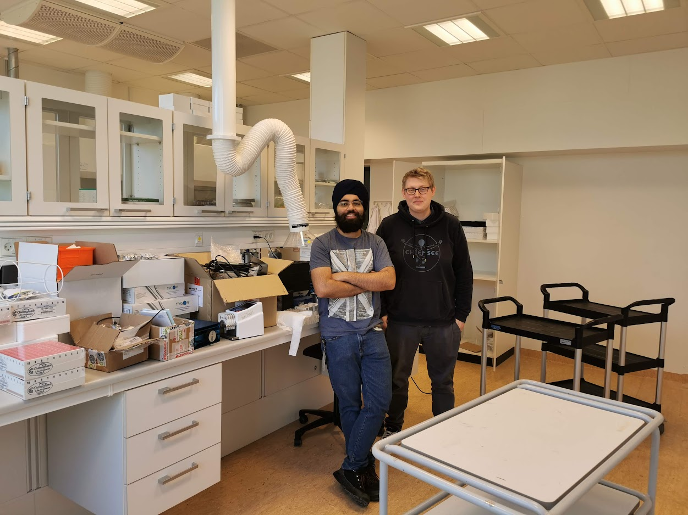
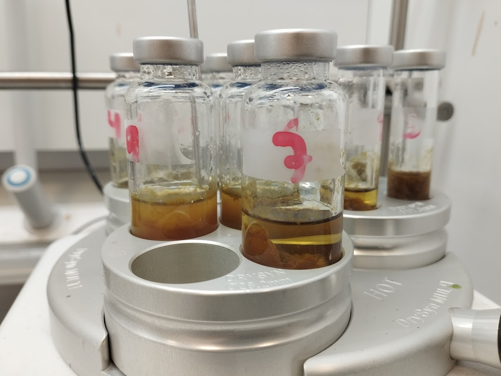
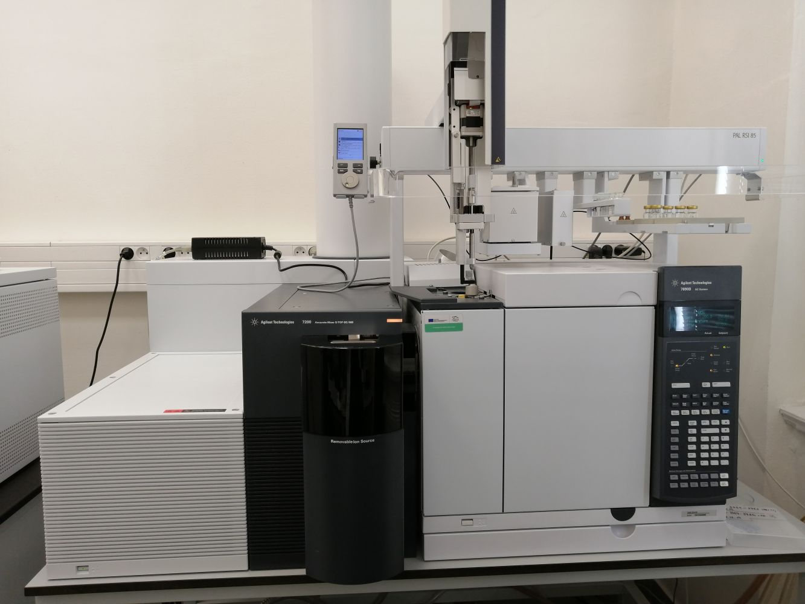
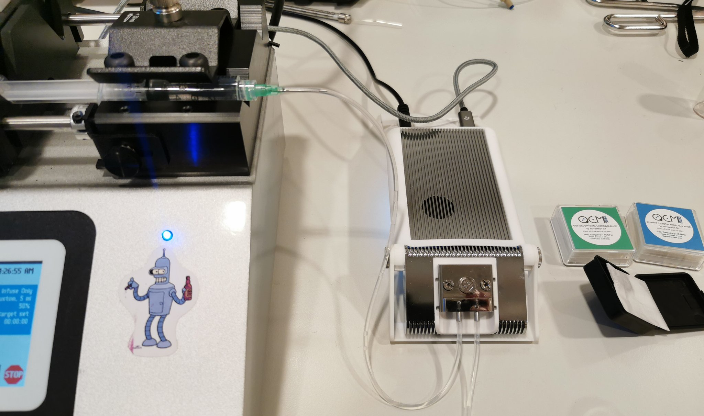

Laboratories
We house a small, but cosy, laboratory with capabilities for synthetic and characterization work. Furthermore, we have access to shared departmental facilities and also rely on a little help from our friends and collaborators. Furthermore, we work heavily with mass spectrometry. For more detailed description of our capabilities here, see the ‘Analytical facilities’ page.
Synthesis
We have multiple fume hoods and equipment for:
- Air-sensitive manipulations using Schlenk lines
- High-pressure solvothermal synthesis using Asynt Pressuresyn and thick-wall glass reactors
- Fluidics based on multiple programmable syringe and peristaltic pumps. This is primarily used for sensing applications, thin-film growth, and process automation.



Fiber optics lab
….. Fiber optic characterization and sensing.
Mass flow controllers
Spectroscopy
Bruker Anasys nanoIR 3
Description?
Fluidics cell for measurement of surfaces in contact with liquids (AFM mode only).
Bruker Alpha II FT-IR
Used for routine spectroscopy, primarily of solids (i.e. MOFs, precursors and reagents). Useful for ID verification, coordination modes and presence of functional groups.
Thermo Scientific iCAP 7000 ICP-OES
This instrument is primarily used to verify and quantify metal-content of metal-organic frameworks via acid digestion.
Miscellaneous
Quartz crystal microbalance

An open-source quartz crystal microbalance (QCM) instrument used for characterization of adsorption/desorption in thin-films and drop-cast materials. Capable of dissipation monitoring to evaluate stiffness.